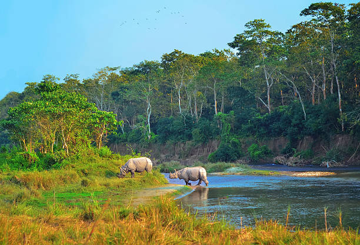
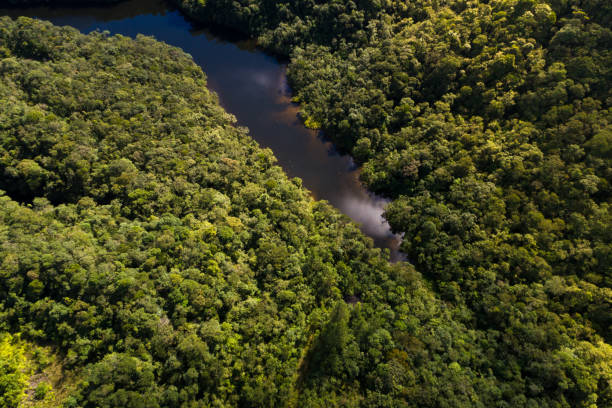
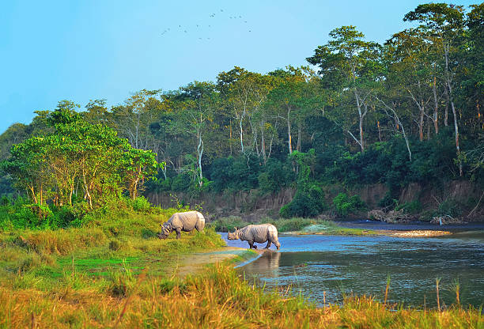
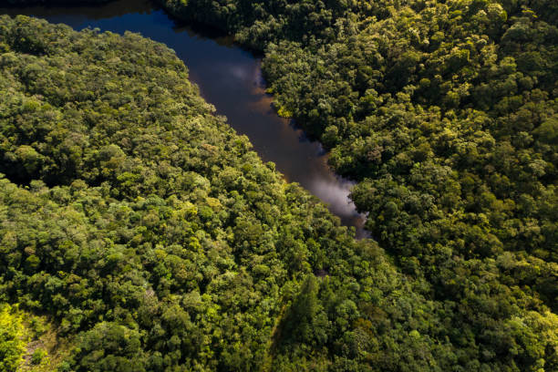

NATURALS


India is a land of breathtaking natural beauty, marked by incredible geographical diversity and rich ecosystems. The towering Himalayas in the north boast snow-capped peaks, lush valleys, and glaciers that feed some of the country's most important rivers. These rivers, such as the Ganges, Yamuna, and Brahmaputra, flow through the fertile Indo-Gangetic Plain, supporting millions of livelihoods. In contrast, the arid Thar Desert in the west offers a stark yet mesmerizing landscape of golden sand dunes and unique desert wildlife. India's long coastline, spanning over 7,500 kilometers, features picturesque beaches, serene backwaters, and thriving marine biodiversity. The country’s biodiversity is remarkable, hosting a variety of flora and fauna, including iconic species like Bengal tigers, Asiatic lions, Indian elephants, and one-horned rhinos. Protected areas such as Jim Corbett National Park, Kaziranga, and the Sundarbans are globally recognized for conservation. Forests range from tropical rainforests in the Western Ghats to mangroves in the Sundarbans and alpine vegetation in the Himalayan region, making India one of the 17 megadiverse countries in the world. India's natural wonders include the ethereal Valley of Flowers, the salt plains of the Rann of Kutch, and the biodiverse Western Ghats. The monsoon, a defining feature of India’s climate, rejuvenates the land and sustains agriculture, while the diverse topography supports climates ranging from tropical in the south to alpine in the north. Deeply interwoven with its cultural and spiritual heritage, India’s natural beauty continues to inspire and attract people from around the world.
This stunning image captures the breathtaking beauty of the Himalayan range. Verdant meadows stretch across the foreground, blending seamlessly into the majestic snow-capped peaks. The clear blue sky dotted with soft clouds adds a tranquil charm to the scene. The Himalayas are not only a testament to India's natural splendor but also a crucial source of freshwater through its glaciers, feeding rivers that sustain millions.
This image showcases the Western Ghats, one of India's UNESCO World Heritage sites. The mist-laden hills, lush greenery, and golden sunlight breaking through the clouds create a serene and magical ambiance. Known for their exceptional biodiversity, the Western Ghats are home to unique flora and fauna, making them a paradise for nature lovers and a hotspot for conservation.
The image portrays the enchanting Valley of Flowers National Park, located in Uttarakhand. This UNESCO World Heritage Site is a vibrant tapestry of colorful alpine blooms, set against the backdrop of towering snow-clad peaks. The valley comes alive during the monsoon season, offering a mesmerizing display of nature’s artistry and an unforgettable experience for trekkers and botanists alike.


India's deserts are a testament to the country's diverse geography, with the Thar Desert, also known as the Great Indian Desert, being the most prominent. Spanning the states of Rajasthan, Gujarat, Haryana, and Punjab, it is one of the world's largest arid regions. Characterized by vast stretches of sand dunes, sparse vegetation, and extreme temperatures, the Thar Desert is home to unique flora and fauna adapted to its harsh conditions. The desert sustains a vibrant culture, with traditional Rajasthani folk music, dance, and crafts thriving in its towns and villages. Despite its arid nature, the region supports a surprising amount of agriculture and human settlement, thanks to innovations like the Indira Gandhi Canal. Challenges such as desertification and water scarcity persist, but efforts to balance development with conservation aim to preserve the ecological and cultural heritage of this unique landscape.


India is home to some of the most majestic mountain ranges, each contributing uniquely to the country’s geography, culture, and biodiversity. The towering Himalayas in the north, including peaks like Kanchenjunga, not only form a natural barrier but also influence the monsoon and house sacred rivers like the Ganga and Yamuna. To the west, the Aravalli Range, one of the world's oldest, protects fertile lands from desertification, while the rugged Karakoram Range in Ladakh boasts formidable peaks like K2 and vast glaciers like Siachen. The Western Ghats, a UNESCO World Heritage Site, and the Eastern Ghats flank India’s coasts, offering lush forests, waterfalls, and endemic wildlife. The Vindhya and Satpura ranges define central India’s topography, marking the transition from the northern plains to the Deccan Plateau. In the northeast, the Purvanchal Hills extend the Himalayas, enriching the region’s cultural and ecological diversity. These mountains are not just geographical features but lifelines, shaping India’s climate, supporting agriculture, nurturing rivers, and drawing adventurers and pilgrims alike to their timeless beauty.
 




India is home to some of the most diverse and extensive forests in the world, covering approximately 21.71% of its land area. These forests play a crucial role in maintaining ecological balance, providing habitat for a wide range of flora and fauna. From the dense mangroves of the Sundarbans to the tropical rainforests of the Western Ghats, and the Himalayan coniferous forests to the arid thorn forests of Rajasthan, India's forests are incredibly varied. They not only support biodiversity but also serve as a livelihood source for millions of people who depend on forest resources like timber, fuelwood, and medicinal plants. Furthermore, Indian forests act as vital carbon sinks, helping combat climate change while contributing to water regulation and soil preservation. Despite their importance, challenges like deforestation, illegal logging, and climate change threaten these ecosystems, making conservation efforts essential for their sustainability.